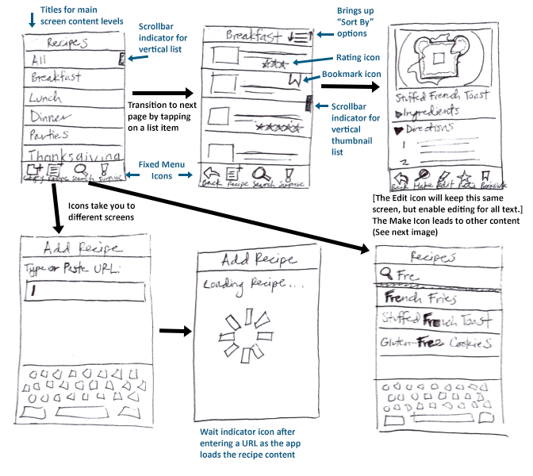
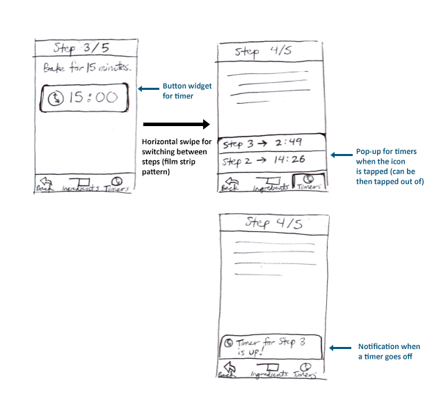

Mobile Design
Software
Photoshop · InVision
Skills Used
market research · wireframing · hi-fi prototyping
I designed the interface for a potential cooking app, guided by mobile design principles. Initially for this project, I researched other available cooking apps to determine what could be improved upon. In my market research, there was a general lack of ability to store recipes from external sources; you could only store recipes which were created within the app by you or other users. Additionally, many of the apps were difficult to use while cooking, such as when following steps in a recipe. I set out to design a convenient cooking app that provided useful tools for a home cook.
This led to the creation of Remy, a mobile app which serves as a recipe organizer and cooking helper. I first wrote down a list of features the app should include. From there, I started sketching out a wireframe to flesh out some of the ideas, particularly for recipe organization and a step-by-step recipe interface.
 
For the hi-fi prototype, I focused on developing a clean and inviting interface, influenced by iOS design guidelines. The UI layout was designed in Photoshop, and an interactive prototype was developed in InVision. In the mockup, the user can add recipes to the app by simply entering a URL to the recipe. Recipes can also be organized based on user-defined categories. Other features include being able to rate recipes and bookmark them.
After selecting a recipe, the user can choose to make it. This takes the user to a minimalistic interface for helpful guidance through the recipe’s steps. The app keeps track of which step the user is currently on and only displays that step’s instructions to simplify the cooking process. A list of ingredients specific to that step can also be displayed. Once the user is done with a step, they can tap to move onto the next step (or to the previous step if need be). At steps which involve waiting a certain amount of time, a timer widget is displayed on the screen. The user can then immediately start the timer when needed, without having to use a different app or device.
Remy provides a streamlined experience for users to prepare a meal, hassle-free.